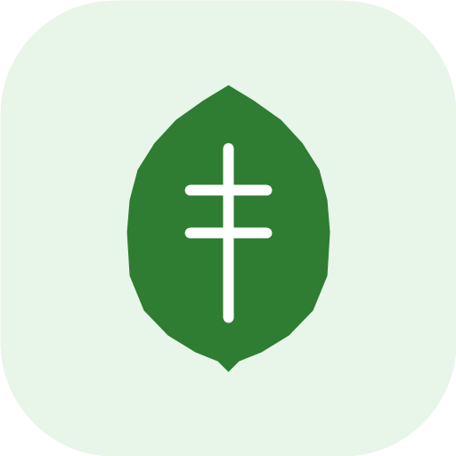

Android 앱 · Google Play 출시 · GitHub Releases
BrioDo — Do it with brio.
AI와 함께하는 스마트 할 일 관리 — 활기차게, 해내다.
AI와 Google 캘린더가 손잡은, 가장 빠른 할 일 앱
- 설치
- 10+
- 커밋
- 30
- 릴리스
- 22회
- 최신 버전
- v1.5.3
- 시작
- 2026.03.18
- 마지막 커밋
9 to 6 직장인 · 두 아들 아빠 · 바이브코더 · 크리스천

EL Studio Android, Web & Desktop Developer
낮에는 9 to 6 직장인이자 두 아들의 아빠, 밤에는 바이브코딩으로 아이디어를 끝까지 만들어 배포하는 개발자입니다.
창문 하나가 하루입니다. 지난 371일 중 246일 불이 켜졌고, 모두 11,804번 기여했습니다. 건물이 높을수록 그 달이 바빴습니다. 최장 연속 기록은 205일.
대표작
스토어에 올라가 있거나, 수백 번 커밋하며 다듬은 프로젝트입니다. 숫자는 모두 레포와 스토어에서 빌드할 때 가져옵니다.
Android 앱 · Google Play 출시 · GitHub Releases
AI와 함께하는 스마트 할 일 관리 — 활기차게, 해내다.
AI와 Google 캘린더가 손잡은, 가장 빠른 할 일 앱


Android 앱 · Google Play 출시 · GitHub Releases

Markleaf안드로이드를 위한 조용한 마크다운 노트. 계정·광고·인터넷 권한 모두 없음.
A local-first, minimal Markdown note app for Android


데스크톱 · GitHub Releases · 웹에서 바로 열기
Windows 작업 표시줄 트레이에서 Claude Code, Gemini CLI, OpenCode 등 다양한 AI 에이전트 도구들의 실시간 크레딧 사용량과 알림을 백그라운드에서 편리하게 감시하고 모니터링해 주는 WPF 유틸리티 앱.
Windows 시스템 트레이에서 Claude, Codex(ChatGPT), OpenCode, Antigravity AI 사용량과 날씨 알림을 함께 확인하는 통합 모니터링 앱입니다.
운영
어디로 배포하고, 무엇을 자동화했는지 레포에서 직접 셌습니다. 지난 30일 동안 손댄 레포만 117개입니다.
기술
공개 레포 170개의 코드량을 언어별로 합쳤습니다. 항목을 누르면 그 기술로 만든 프로젝트만 모아 볼 수 있습니다.
전체 프로젝트
카드를 누르면 README 스크린샷, 언어 구성, 커밋·릴리스 기록과 링크가 열립니다.